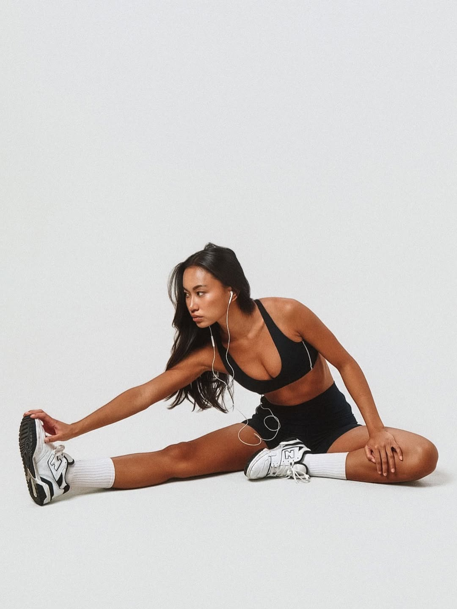

Share your
glow

week
three
oct 6 → oct 26
1
6 sessions kept
2
squat 9 → 18 lb
3
sleep 5 → 7
4
never missed twice
own.
Week
Session
Season
My photo
No body numbers on the card, ever. Only what you kept.
TikTok
Instagram
Save
More